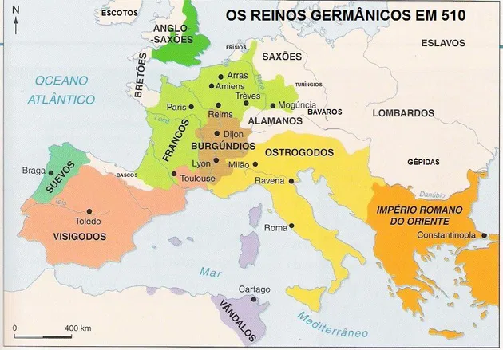

Povos Germânicos
Origem
Os povos germânicos é o nome dado a diversos povos de diferentes partes da Europa e da Ásia. A origem exata dos povos germânicos é incerta. Uma das hipóteses, e a mais provável, é que eles se originaram perto da região da Escandinávia e do mar Báltico, antes de terem contato com povos indo-europeus, o que resultou em uma influência cultural, que entre diversas coisas, fez com que os germânicos adotassem a língua indo-europeia.
Alguns dos povos germânicos mais influentes foram os godos (que se dividiu em dois ramos, visigodos e ostrogodos), hunos, francos, saxões, vândalos, anglos, lombardos, dentre muitos outros.
Características Gerais (antes do séc. V)
Economia
A maioria dos povos germânicos se mantinham a base de cultivo de cereais, caça e saque de alimentos e riquezas de povos que derrotaram em guerras.
Sociedade
Os povos germânicos em geral possuíam uma cultura guerreira, onde elegiam um chefe guerreiro para comandar o bando armado nas conquistas. Além disso, com as vitórias em guerras, eles afixavam parte do território para agricultura e criação de gado.
Religião
Em geral, os povos germânicos eram politeístas e adoravam personificações da natureza (como trovão, sol, raio, lua, etc). A mitologia germânica é muito parecida com a nórdica nesse aspecto.

Apesar de ouvirmos falar dos povos germânicos como “bárbaros” que constantemente se envolviam em guerras com o Império Romano,
A partir do século V, os povos germânicos começaram a se fixar nas terras que antes pertenciam a roma, transformando os líderes guerreiros em reis, como os francos na região da Gália, os lombardos na península Itálica e os anglo-saxões nas Ilhas Britânicas.
A aculturação (troca entre culturas diferentes a partir de sua convivência) entre povos germânicos e romanos aconteceu muito, ao ponto dos reinos germânicos empregarem diversas partes da cultura romana, como o uso do latim e algumas das leis do direito romano em seus governos.